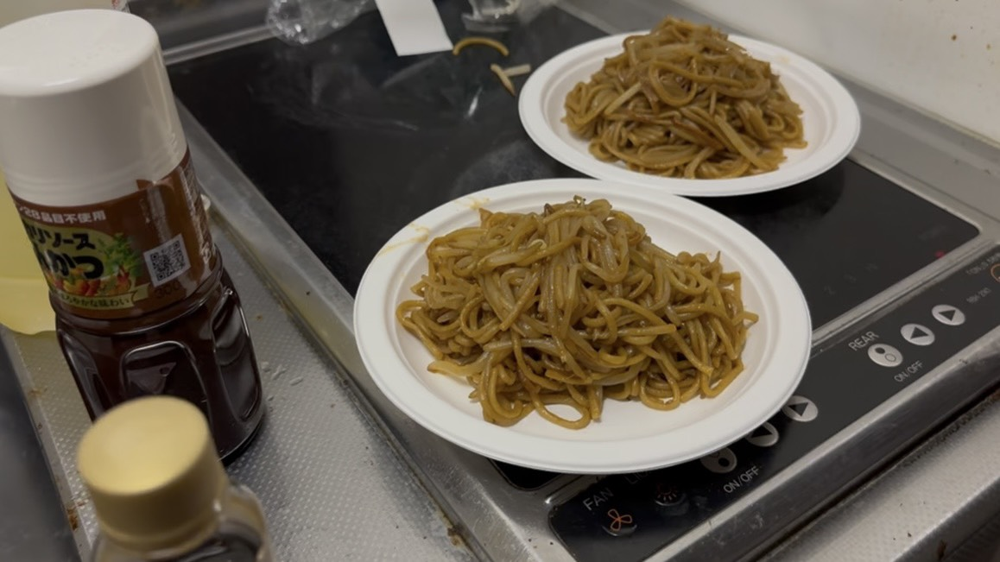

a<!DOCTYPE html>
<html lang="ja">
<head>
  <meta charset="UTF-8">
  <meta name="viewport" content="width=device-width, initial-scale=1.0">
  <title>第1話｜小路記のグルメ</title>
  <link rel="stylesheet" href="話.css">
  <link rel="stylesheet" href="話.move.css">
   <script src="話.js"></script>
</head>
<body>

  <!-- 戻るボタン -->
  <a href="../index.html" class="back-button">←</a>

  <!-- あらすじ -->
  <div class="episode-description">
    <h2>あらすじ</h2>
    <p>大学から友道と帰る途中、最近食べれていない事実を打ち明ける貴琉。<br>
      それを聞いた友達が...</p>
  </div>

  <!-- 動画セクション -->
  <div class="video-section" >
    <div class="video-thumbnail-wrapper" data-video="https://youtu.be/33WaCwwLbuw?si=Jp_GYyQPKze990p4">
      
       <div class="play-overlay"id="playTrigger">
            <svg viewBox="0 0 100 100" width="80" height="80" xmlns="http://www.w3.org/2000/svg">
              <circle cx="50" cy="50" r="48" fill="rgba(0,0,0,0.5)" />
              <polygon points="40,30 70,50 40,70" fill="white" />
            </svg>
          </div>
    </div>
  </div>

  <!-- 再生確認モーダル -->
  <div id="confirmModal" class="modal hidden">
    <div class="modal-content">
      <p>この動画を再生しますか？</p>
      <button id="playBtn">再生する</button>
      <button id="cancelBtn">キャンセル</button>
    </div>
  </div>

  <!-- 前後話数ナビ -->
  <div class="episode-nav">
    <!--<a href="../0話/0話.html" class="nav-button">← 前の話</a>-->
    <div></div>
    <a href="2話.html" class="nav-button">次の話 →</a>
  </div>

  <!-- レシピ -->
  <div class="recipe-section">
    <h2>今回の料理</h2>
    <div class="recipe-content">
    <ul>
      <li>焼きそば：2玉：36円</li>
      <li>もやし：1袋：28円</li>
      <li>トンカツソース：大さじ3：24円</li>
      <li>鶏がら：小さじ1：16円</li>
      <li>醤油：小さじ1：8円</li>
      <li>油：5円</li>
      <li>累計117円</li>
    </ul>
      <div class="recipe-image">
      
      </div>
    </div>
  </div>
</body>

</html>


